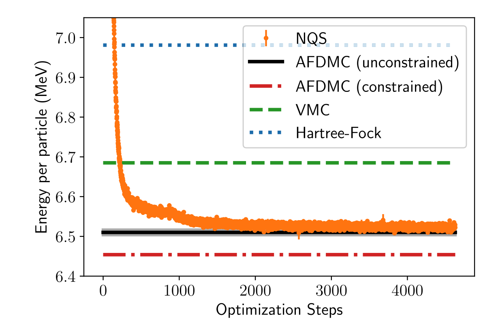
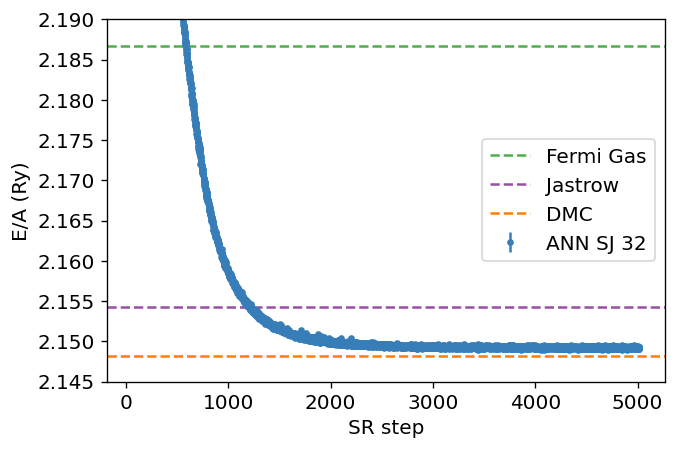

Advanced machine learning and data analysis for the physical sciences
January 23, 2025
Overview of first week, January 20-24, 2025
- Presentation of course
- Discussion of possible projects and presentation of participants
- Deep learning methods, mathematics and review of neural networks
- Video of lecture to be posted after lecture
Practicalities
- Lectures Thursdays 1215pm-2pm, room FØ434, Department of Physics
- Lab and exercise sessions Thursdays 215pm-4pm, , room FØ434, Department of Physics
- We plan to work on two projects which will define the content of the course, the format can be agreed upon by the participants
- No exam, only two projects. Each projects counts 1/2 of the final grade. Aleternatively one long project.
- All info at the GitHub address https://github.com/CompPhysics/AdvancedMachineLearning
Deep learning methods covered, tentative
- Deep learning, classics
- Feed forward neural networks and its mathematics (NNs)
- Convolutional neural networks (CNNs)
- Recurrent neural networks (RNNs)
- Autoencoders and principal component analysis
Additional topics: Kernel regression (Gaussian processes) and Bayesian statistics
Kernel machine regression (KMR), also called Gaussian process regression, is a popular tool in the machine learning literature. The main idea behind KMR is to flexibly model the relationship between a large number of variables and a particular outcome (dependent variable).
Scientific Machine Learning
An important and emerging field is what has been dubbed as scientific ML, see the article by Deiana et al Applications and Techniques for Fast Machine Learning in Science, Big Data 5, 787421 (2022)
The authors discuss applications and techniques for fast machine learning (ML) in science – the concept of integrating power ML methods into the real-time experimental data processing loop to accelerate scientific discovery. The report covers three main areas
- applications for fast ML across a number of scientific domains;
- techniques for training and implementing performant and resource-efficient ML algorithms;
- and computing architectures, platforms, and technologies for deploying these algorithms.
Physics driven Machine Learning
Another hot topic is what has loosely been dubbed Physics-driven deep learning. See the recent work on Learning nonlinear operators via DeepONet based on the universal approximation theorem of operators, Nature Machine Learning, vol 3, 218 (2021).
A less known but powerful result is that an NN with a single hidden layer can accurately approximate any nonlinear continuous operator. This universal approximation theorem of operators is suggestive of the structure and potential of deep neural networks (DNNs) in learning continuous operators or complex systems from streams of scattered data. ... We demonstrate that DeepONet can learn various explicit operators, such as integrals and fractional Laplacians, as well as implicit operators that represent deterministic and stochastic differential equations.
Good books with hands-on material and codes
All three books have GitHub addresses from where one can download all codes. We will borrow most of the material from these three texts as well as from Goodfellow, Bengio and Courville's text Deep Learning
Machine learning. A simple perspective on the interface between ML and Physics, HPC is essential

AI/ML and some statements you may have heard (and what do they mean?)
- Fei-Fei Li on ImageNet: map out the entire world of objects (The data that transformed AI research)
- Russell and Norvig in their popular textbook: relevant to any intellectual task; it is truly a universal field (Artificial Intelligence, A modern approach)
- Woody Bledsoe puts it more bluntly: in the long run, AI is the only science (quoted in Pamilla McCorduck, Machines who think)
If you wish to have a critical read on AI/ML from a societal point of view, see Kate Crawford's recent text Atlas of AI. See also https://www.nationaldefensemagazine.org/articles/2023/3/24/ukraine-a-living-lab-for-ai-warfare
Here: with AI/ML we intend a collection of machine learning methods with an emphasis on statistical learning and data analysisTypes of machine learning
The approaches to machine learning are many, but are often split into two main categories. In supervised learning we know the answer to a problem, and let the computer deduce the logic behind it. On the other hand, unsupervised learning is a method for finding patterns and relationship in data sets without any prior knowledge of the system.
An emerging third category is reinforcement learning. This is a paradigm of learning inspired by behavioural psychology, where learning is achieved by trial-and-error, solely from rewards and punishment.
Main categories
Another way to categorize machine learning tasks is to consider the desired output of a system. Some of the most common tasks are:
- Classification: Outputs are divided into two or more classes. The goal is to produce a model that assigns inputs into one of these classes. An example is to identify digits based on pictures of hand-written ones. Classification is typically supervised learning.
- Regression: Finding a functional relationship between an input data set and a reference data set. The goal is to construct a function that maps input data to continuous output values.
- Clustering: Data are divided into groups with certain common traits, without knowing the different groups beforehand. It is thus a form of unsupervised learning.
The plethora of machine learning algorithms/methods
- Deep learning: Neural Networks (NNs), Convolutional NNs, Recurrent NNs, Transformers, Boltzmann machines, autoencoders and variational autoencoders and generative adversarial networks and other generative models
- Bayesian statistics and Bayesian Machine Learning, Bayesian experimental design, Bayesian Regression models, Bayesian neural networks, Gaussian processes and much more
- Dimensionality reduction (Principal component analysis), Clustering Methods and more
- Ensemble Methods, Random forests, bagging and voting methods, gradient boosting approaches
- Linear and logistic regression, Kernel methods, support vector machines and more
- Reinforcement Learning; Transfer Learning and more
What Is Generative Modeling?
Generative modeling can be broadly defined as follows:
Generative modeling is a branch of machine learning that involves training a model to produce new data that is similar to a given dataset.
What does this mean in practice? Suppose we have a dataset containing photos of horses. We can train a generative model on this dataset to capture the rules that govern the complex relationships between pixels in images of horses. Then we can sample from this model to create novel, realistic images of horses that did not exist in the original dataset.
Example of generative modeling, taken from Generative Deeep Learning by David Foster

Generative Modeling
In order to build a generative model, we require a dataset consisting of many examples of the entity we are trying to generate. This is known as the training data, and one such data point is called an observation.
Each observation consists of many features. For an image generation problem, the features are usually the individual pixel values; for a text generation problem, the features could be individual words or groups of letters. It is our goal to build a model that can generate new sets of features that look as if they have been created using the same rules as the original data. Conceptually, for image generation this is an incredibly difficult task, considering the vast number of ways that individual pixel values can be assigned and the relatively tiny number of such arrangements that constitute an image of the entity we are trying to generate.
Generative Versus Discriminative Modeling
In order to truly understand what generative modeling aims to achieve and why this is important, it is useful to compare it to its counterpart, discriminative modeling. If you have studied machine learning, most problems you will have faced will have most likely been discriminative in nature.
Example of discriminative modeling, taken from Generative Deeep Learning by David Foster

Discriminative Modeling
When performing discriminative modeling, each observation in the training data has a label. For a binary classification problem such as our data could be labeled as ones and zeros. Our model then learns how to discriminate between these two groups and outputs the probability that a new observation has label 1 or 0
In contrast, generative modeling doesn’t require the dataset to be labeled because it concerns itself with generating entirely new data (for example an image), rather than trying to predict a label for say a given image.
Taxonomy of generative deep learning, taken from Generative Deep Learning by David Foster

Possible paths for the projects
The differential equation path: Here we propose a set of differential equations (ordinary and/or partial) to be solved first using neural networks (using either your own code or TensorFlow/Pytorch or similar libraries). Thereafter we can extend the set of methods for solving these equations to recurrent neural networks and autoencoders (AE) and/or Generalized Adversarial Networks (GANs). All these approaches can be expanded into one large project. This project can also be extended into including Physics informed machine learning. Here we can discuss neural networks that are trained to solve supervised learning tasks while respecting any given law of physics described by general nonlinear partial differential equations.
For those interested in mathematical aspects of deep learning, this could also be included.
The generative models
This path brings us from discriminative models (like the standard application of NNs, CNNs etc) to generative models. Two projects that follow to a large extent the lectures. Topics for data sets will be discussed during the lab sessions.
Paths for projects, writing own codes
The computational path: Here we propose a path where you develop your own code for a convolutional or eventually recurrent neural network and apply this to data selects of your own selection. The code should be object oriented and flexible allowing for eventual extensions by including different Loss/Cost functions and other functionalities. Feel free to select data sets from those suggested below here. This code can also be extended upon by adding for example autoencoders. You can compare your own codes with implementations using TensorFlow(Keras)/PyTorch or other libraries.
The application path
The application path: Here you can use the most relevant method(s) (say convolutional neural networks for images) and apply this(these) to data sets relevant for your own research.
Gaussian processes and Bayesian analysis
The Gaussian processes/Bayesian statistics path: Kernel regression (Gaussian processes) and Bayesian statistics are popular tools in the machine learning literature. The main idea behind these approaches is to flexibly model the relationship between a large number of variables and a particular outcome (dependent variable). This can form a second part of a project where for example standard Kernel regression methods are used on a specific data set. Alternatively, participants can opt to work on a large project relevant for their own research using gaussian processes and/or Bayesian machine Learning.
HPC path
Another alternative is to study high-performance computing aspects in designing ML codes. This can also be linked with an exploration of mathematical aspects of deep learning methods.
What are the basic Machine Learning ingredients?
Almost every problem in ML and data science starts with the same ingredients:
- The dataset \( \boldsymbol{x} \) (could be some observable quantity of the system we are studying)
- A model which is a function of a set of parameters \( \boldsymbol{\alpha} \) that relates to the dataset, say a likelihood function \( p(\boldsymbol{x}\vert \boldsymbol{\alpha}) \) or just a simple model \( f(\boldsymbol{\alpha}) \)
- A so-called loss/cost/risk function \( \mathcal{C} (\boldsymbol{x}, f(\boldsymbol{\alpha})) \) which allows us to decide how well our model represents the dataset.
We seek to minimize the function \( \mathcal{C} (\boldsymbol{x}, f(\boldsymbol{\alpha})) \) by finding the parameter values which minimize \( \mathcal{C} \). This leads to various minimization algorithms. It may surprise many, but at the heart of all machine learning algortihms there is an optimization problem.
Low-level machine learning, the family of ordinary least squares methods
Our data which we want to apply a machine learning method on, consist of a set of inputs \( \boldsymbol{x}^T=[x_0,x_1,x_2,\dots,x_{n-1}] \) and the outputs we want to model \( \boldsymbol{y}^T=[y_0,y_1,y_2,\dots,y_{n-1}] \). We assume that the output data can be represented (for a regression case) by a continuous function \( f \) through
$$
\boldsymbol{y}=f(\boldsymbol{x})+\boldsymbol{\epsilon}.
$$
Setting up the equations
In linear regression we approximate the unknown function with another continuous function \( \tilde{\boldsymbol{y}}(\boldsymbol{x}) \) which depends linearly on some unknown parameters \( \boldsymbol{\theta}^T=[\theta_0,\theta_1,\theta_2,\dots,\theta_{p-1}] \).
The input data can be organized in terms of a so-called design matrix with an approximating function \( \boldsymbol{\tilde{y}} \)
$$
\boldsymbol{\tilde{y}}= \boldsymbol{X}\boldsymbol{\theta},
$$
The objective/cost/loss function
The simplest approach is the mean squared error
$$
C(\boldsymbol{\Theta})=\frac{1}{n}\sum_{i=0}^{n-1}\left(y_i-\tilde{y}_i\right)^2=\frac{1}{n}\left\{\left(\boldsymbol{y}-\boldsymbol{\tilde{y}}\right)^T\left(\boldsymbol{y}-\boldsymbol{\tilde{y}}\right)\right\},
$$
or using the matrix \( \boldsymbol{X} \) and in a more compact matrix-vector notation as
$$
C(\boldsymbol{\Theta})=\frac{1}{n}\left\{\left(\boldsymbol{y}-\boldsymbol{X}\boldsymbol{\theta}\right)^T\left(\boldsymbol{y}-\boldsymbol{X}\boldsymbol{\theta}\right)\right\}.
$$
This function represents one of many possible ways to define the so-called cost function.
Training solution
Optimizing with respect to the unknown parameters \( \theta_j \) we get
$$
\boldsymbol{X}^T\boldsymbol{y} = \boldsymbol{X}^T\boldsymbol{X}\boldsymbol{\theta},
$$
and if the matrix \( \boldsymbol{X}^T\boldsymbol{X} \) is invertible we have the optimal values
$$
\hat{\boldsymbol{\theta}} =\left(\boldsymbol{X}^T\boldsymbol{X}\right)^{-1}\boldsymbol{X}^T\boldsymbol{y}.
$$
We say we 'learn' the unknown parameters \( \boldsymbol{\theta} \) from the last equation.
Ridge and LASSO Regression
Our optimization problem is
$$
{\displaystyle \min_{\boldsymbol{\theta}\in {\mathbb{R}}^{p}}}\frac{1}{n}\left\{\left(\boldsymbol{y}-\boldsymbol{X}\boldsymbol{\theta}\right)^T\left(\boldsymbol{y}-\boldsymbol{X}\boldsymbol{\theta}\right)\right\}.
$$
or we can state it as
$$
{\displaystyle \min_{\boldsymbol{\theta}\in
{\mathbb{R}}^{p}}}\frac{1}{n}\sum_{i=0}^{n-1}\left(y_i-\tilde{y}_i\right)^2=\frac{1}{n}\vert\vert \boldsymbol{y}-\boldsymbol{X}\boldsymbol{\theta}\vert\vert_2^2,
$$
where we have used the definition of a norm-2 vector, that is
$$
\vert\vert \boldsymbol{x}\vert\vert_2 = \sqrt{\sum_i x_i^2}.
$$
From OLS to Ridge and Lasso
By minimizing the above equation with respect to the parameters \( \boldsymbol{\theta} \) we could then obtain an analytical expression for the parameters \( \boldsymbol{\theta} \). We can add a regularization parameter \( \lambda \) by defining a new cost function to be optimized, that is
$$
{\displaystyle \min_{\boldsymbol{\theta}\in
{\mathbb{R}}^{p}}}\frac{1}{n}\vert\vert \boldsymbol{y}-\boldsymbol{X}\boldsymbol{\theta}\vert\vert_2^2+\lambda\vert\vert \boldsymbol{\theta}\vert\vert_2^2
$$
which leads to the Ridge regression minimization problem where we require that \( \vert\vert \boldsymbol{\theta}\vert\vert_2^2\le t \), where \( t \) is a finite number larger than zero. We do not include such a constraints in the discussions here.
Lasso regression
Defining
$$
C(\boldsymbol{X},\boldsymbol{\theta})=\frac{1}{n}\vert\vert \boldsymbol{y}-\boldsymbol{X}\boldsymbol{\theta}\vert\vert_2^2+\lambda\vert\vert \boldsymbol{\theta}\vert\vert_1,
$$
we have a new optimization equation
$$
{\displaystyle \min_{\boldsymbol{\theta}\in
{\mathbb{R}}^{p}}}\frac{1}{n}\vert\vert \boldsymbol{y}-\boldsymbol{X}\boldsymbol{\theta}\vert\vert_2^2+\lambda\vert\vert \boldsymbol{\theta}\vert\vert_1
$$
which leads to Lasso regression. Lasso stands for least absolute shrinkage and selection operator. Here we have defined the norm-1 as
$$
\vert\vert \boldsymbol{x}\vert\vert_1 = \sum_i \vert x_i\vert.
$$
Examples: Many-body physics, Quantum Monte Carlo and deep learning
Given a hamiltonian \( H \) and a trial wave function \( \Psi_T \), the variational principle states that the expectation value of \( \langle H \rangle \), defined through
$$
\langle E \rangle =
\frac{\int d\boldsymbol{R}\Psi^{\ast}_T(\boldsymbol{R})H(\boldsymbol{R})\Psi_T(\boldsymbol{R})}
{\int d\boldsymbol{R}\Psi^{\ast}_T(\boldsymbol{R})\Psi_T(\boldsymbol{R})},
$$
is an upper bound to the ground state energy \( E_0 \) of the hamiltonian \( H \), that is
$$
E_0 \le \langle E \rangle.
$$
In general, the integrals involved in the calculation of various expectation values are multi-dimensional ones. Traditional integration methods such as the Gauss-Legendre will not be adequate for say the computation of the energy of a many-body system. Basic philosophy: Let a neural network find the optimal wave function
Quantum Monte Carlo Motivation
Choose a trial wave function \( \psi_T(\boldsymbol{R}) \).
$$
P(\boldsymbol{R},\boldsymbol{\alpha})= \frac{\left|\psi_T(\boldsymbol{R},\boldsymbol{\alpha})\right|^2}{\int \left|\psi_T(\boldsymbol{R},\boldsymbol{\alpha})\right|^2d\boldsymbol{R}}.
$$
This is our model, or likelihood/probability distribution function (PDF). It depends on some variational parameters \( \boldsymbol{\alpha} \). The approximation to the expectation value of the Hamiltonian is now
$$
\langle E[\boldsymbol{\alpha}] \rangle =
\frac{\int d\boldsymbol{R}\Psi^{\ast}_T(\boldsymbol{R},\boldsymbol{\alpha})H(\boldsymbol{R})\Psi_T(\boldsymbol{R},\boldsymbol{\alpha})}
{\int d\boldsymbol{R}\Psi^{\ast}_T(\boldsymbol{R},\boldsymbol{\alpha})\Psi_T(\boldsymbol{R},\boldsymbol{\alpha})}.
$$
Quantum Monte Carlo Motivation
$$
E_L(\boldsymbol{R},\boldsymbol{\alpha})=\frac{1}{\psi_T(\boldsymbol{R},\boldsymbol{\alpha})}H\psi_T(\boldsymbol{R},\boldsymbol{\alpha}),
$$
called the local energy, which, together with our trial PDF yields
$$
\langle E[\boldsymbol{\alpha}] \rangle=\int P(\boldsymbol{R})E_L(\boldsymbol{R},\boldsymbol{\alpha}) d\boldsymbol{R}\approx \frac{1}{N}\sum_{i=1}^NE_L(\boldsymbol{R_i},\boldsymbol{\alpha})
$$
with \( N \) being the number of Monte Carlo samples.
Energy derivatives
The local energy as function of the variational parameters defines now our objective/cost function.
To find the derivatives of the local energy expectation value as function of the variational parameters, we can use the chain rule and the hermiticity of the Hamiltonian.
Let us define (with the notation \( \langle E[\boldsymbol{\alpha}]\rangle =\langle E_L\rangle \))
$$
\bar{E}_{\alpha_i}=\frac{d\langle E_L\rangle}{d\alpha_i},
$$
as the derivative of the energy with respect to the variational parameter \( \alpha_i \) We define also the derivative of the trial function (skipping the subindex \( T \)) as
$$
\bar{\Psi}_{i}=\frac{d\Psi}{d\alpha_i}.
$$
Derivatives of the local energy
The elements of the gradient of the local energy are
$$
\bar{E}_{i}= 2\left( \langle \frac{\bar{\Psi}_{i}}{\Psi}E_L\rangle -\langle \frac{\bar{\Psi}_{i}}{\Psi}\rangle\langle E_L \rangle\right).
$$
From a computational point of view it means that you need to compute the expectation values of
$$
\langle \frac{\bar{\Psi}_{i}}{\Psi}E_L\rangle,
$$
and
$$
\langle \frac{\bar{\Psi}_{i}}{\Psi}\rangle\langle E_L\rangle
$$
These integrals are evaluted using MC intergration (with all its possible error sources). Use methods like stochastic gradient or other minimization methods to find the optimal parameters.
Why Feed Forward Neural Networks (FFNN)?
According to the Universal approximation theorem, a feed-forward neural network with just a single hidden layer containing a finite number of neurons can approximate a continuous multidimensional function to arbitrary accuracy, assuming the activation function for the hidden layer is a non-constant, bounded and monotonically-increasing continuous function.
Dilute neutron star matter from neural-network quantum states by Fore et al, Physical Review Research 5, 033062 (2023) at density \( \rho=0.04 \) fm$^{-3}$

The electron gas in three dimensions with \( N=14 \) electrons (Wigner-Seitz radius \( r_s=2 \) a.u.), Gabriel Pescia, Jane Kim et al. arXiv.2305.07240,

Generative models: Why Boltzmann machines?
What is known as restricted Boltzmann Machines (RMB) have received a lot of attention lately. One of the major reasons is that they can be stacked layer-wise to build deep neural networks that capture complicated statistics.
The original RBMs had just one visible layer and a hidden layer, but recently so-called Gaussian-binary RBMs have gained quite some popularity in imaging since they are capable of modeling continuous data that are common to natural images.
Furthermore, they have been used to solve complicated quantum mechanical many-particle problems or classical statistical physics problems like the Ising and Potts classes of models.
The structure of the RBM network

The network
The network layers:- A function \( \boldsymbol{x} \) that represents the visible layer, a vector of \( M \) elements (nodes). This layer represents both what the RBM might be given as training input, and what we want it to be able to reconstruct. This might for example be the pixels of an image, the spin values of the Ising model, or coefficients representing speech.
- The function \( \boldsymbol{h} \) represents the hidden, or latent, layer. A vector of \( N \) elements (nodes). Also called "feature detectors".
Goals
The goal of the hidden layer is to increase the model's expressive power. We encode complex interactions between visible variables by introducing additional, hidden variables that interact with visible degrees of freedom in a simple manner, yet still reproduce the complex correlations between visible degrees in the data once marginalized over (integrated out).
The network parameters, to be optimized/learned:- \( \boldsymbol{a} \) represents the visible bias, a vector of same length as \( \boldsymbol{x} \).
- \( \boldsymbol{b} \) represents the hidden bias, a vector of same lenght as \( \boldsymbol{h} \).
- \( W \) represents the interaction weights, a matrix of size \( M\times N \).
Joint distribution
The restricted Boltzmann machine is described by a Bolztmann distribution
$$
P_{\mathrm{rbm}}(\boldsymbol{x},\boldsymbol{h}) = \frac{1}{Z} \exp{-E(\boldsymbol{x},\boldsymbol{h})},
$$
where \( Z \) is the normalization constant or partition function, defined as
$$
Z = \int \int \exp{-E(\boldsymbol{x},\boldsymbol{h})} d\boldsymbol{x} d\boldsymbol{h}.
$$
Note the absence of the inverse temperature in these equations.
Network Elements, the energy function
The function \( E(\boldsymbol{x},\boldsymbol{h}) \) gives the energy of a configuration (pair of vectors) \( (\boldsymbol{x}, \boldsymbol{h}) \). The lower the energy of a configuration, the higher the probability of it. This function also depends on the parameters \( \boldsymbol{a} \), \( \boldsymbol{b} \) and \( W \). Thus, when we adjust them during the learning procedure, we are adjusting the energy function to best fit our problem.
Defining different types of RBMs (Energy based models)
There are different variants of RBMs, and the differences lie in the types of visible and hidden units we choose as well as in the implementation of the energy function \( E(\boldsymbol{x},\boldsymbol{h}) \). The connection between the nodes in the two layers is given by the weights \( w_{ij} \).
RBMs were first developed using binary units in both the visible and hidden layer. The corresponding energy function is defined as follows:
$$
E(\boldsymbol{x}, \boldsymbol{h}) = - \sum_i^M x_i a_i- \sum_j^N b_j h_j - \sum_{i,j}^{M,N} x_i w_{ij} h_j,
$$
where the binary values taken on by the nodes are most commonly 0 and 1.
Gaussian binary
Another varient is the RBM where the visible units are Gaussian while the hidden units remain binary:
$$
E(\boldsymbol{x}, \boldsymbol{h}) = \sum_i^M \frac{(x_i - a_i)^2}{2\sigma_i^2} - \sum_j^N b_j h_j - \sum_{i,j}^{M,N} \frac{x_i w_{ij} h_j}{\sigma_i^2}.
$$
Representing the wave function
The wavefunction should be a probability amplitude depending on \( \boldsymbol{x} \). The RBM model is given by the joint distribution of \( \boldsymbol{x} \) and \( \boldsymbol{h} \)
$$
P_{\mathrm{rbm}}(\boldsymbol{x},\boldsymbol{h}) = \frac{1}{Z} \exp{-E(\boldsymbol{x},\boldsymbol{h})}.
$$
To find the marginal distribution of \( \boldsymbol{x} \) we set:
$$
P_{\mathrm{rbm}}(\boldsymbol{x}) =\frac{1}{Z}\sum_{\boldsymbol{h}} \exp{-E(\boldsymbol{x}, \boldsymbol{h})}.
$$
Now this is what we use to represent the wave function, calling it a neural-network quantum state (NQS)
$$
\vert\Psi (\boldsymbol{X})\vert^2 = P_{\mathrm{rbm}}(\boldsymbol{x}).
$$
Define the cost function
Now we don't necessarily have training data (unless we generate it by using some other method). However, what we do have is the variational principle which allows us to obtain the ground state wave function by minimizing the expectation value of the energy of a trial wavefunction (corresponding to the untrained NQS). Similarly to the traditional variational Monte Carlo method then, it is the local energy we wish to minimize. The gradient to use for the stochastic gradient descent procedure is
$$
C_i = \frac{\partial \langle E_L \rangle}{\partial \theta_i}
= 2(\langle E_L \frac{1}{\Psi}\frac{\partial \Psi}{\partial \theta_i} \rangle - \langle E_L \rangle \langle \frac{1}{\Psi}\frac{\partial \Psi}{\partial \theta_i} \rangle ),
$$
where the local energy is given by
$$
E_L = \frac{1}{\Psi} \hat{\boldsymbol{H}} \Psi.
$$
Extrapolations and model interpretability
When you hear phrases like predictions and estimations and correlations and causations, what do you think of? May be you think of the difference between classifying new data points and generating new data points. Or perhaps you consider that correlations represent some kind of symmetric statements like if \( A \) is correlated with \( B \), then \( B \) is correlated with \( A \). Causation on the other hand is directional, that is if \( A \) causes \( B \), \( B \) does not necessarily cause \( A \).
Physics based statistical learning and data analysis
The above concepts are in some sense the difference between old-fashioned machine learning and statistics and Bayesian learning. In machine learning and prediction based tasks, we are often interested in developing algorithms that are capable of learning patterns from given data in an automated fashion, and then using these learned patterns to make predictions or assessments of newly given data. In many cases, our primary concern is the quality of the predictions or assessments, and we are less concerned about the underlying patterns that were learned in order to make these predictions.
Physics based statistical learning points however to approaches that give us both predictions and correlations as well as being able to produce error estimates and understand causations. This leads us to the very interesting field of Bayesian statistics and Bayesian machine learning.
Bayes' Theorem
Bayes' theorem
$$
p(X\vert Y)= \frac{p(X,Y)}{\sum_{i=0}^{n-1}p(Y\vert X=x_i)p(x_i)}=\frac{p(Y\vert X)p(X)}{\sum_{i=0}^{n-1}p(Y\vert X=x_i)p(x_i)}.
$$
The quantity \( p(Y\vert X) \) on the right-hand side of the theorem is evaluated for the observed data \( Y \) and can be viewed as a function of the parameter space represented by \( X \). This function is not necessarily normalized and is normally called the likelihood function.
The function \( p(X) \) on the right hand side is called the prior while the function on the left hand side is the called the posterior probability. The denominator on the right hand side serves as a normalization factor for the posterior distribution.
Quantified limits of the nuclear landscape
Predictions made with eleven global mass model and Bayesian model averaging

Mathematics of deep learning and neural networks
Throughout this course we will use the following notations. Vectors, matrices and higher-order tensors are always boldfaced, with vectors given by lower case letter letters and matrices and higher-order tensors given by upper case letters.
Unless otherwise stated, the elements \( v_i \) of a vector \( \boldsymbol{v} \) are assumed to be real. That is a vector of length \( n \) is defined as \( \boldsymbol{x}\in \mathbb{R}^{n} \) and if we have a complex vector we have \( \boldsymbol{x}\in \mathbb{C}^{n} \).
For a matrix of dimension \( n\times n \) we have \( \boldsymbol{A}\in \mathbb{R}^{n\times n} \) and the first matrix element starts with row element (row-wise ordering) zero and column element zero.
Some mathematical notations
- For all/any \( \forall \)
- Implies \( \implies \)
- Equivalent \( \equiv \)
- Real variable \( \mathbb{R} \)
- Integer variable \( \mathbb{I} \)
- Complex variable \( \mathbb{C} \)
Vectors
We start by defining a vector \( \boldsymbol{x} \) with \( n \) components, with \( x_0 \) as our first element, as
$$
\boldsymbol{x} = \begin{bmatrix} x_0\\ x_1 \\ x_2 \\ \dots \\ \dots \\ x_{n-1} \end{bmatrix}.
$$
and its transpose
$$
\boldsymbol{x}^{T} = \begin{bmatrix} x_0 & x_1 & x_2 & \dots & \dots & x_{n-1} \end{bmatrix},
$$
In case we have a complex vector we define the hermitian conjugate
$$
\boldsymbol{x}^{\dagger} = \begin{bmatrix} x_0^* & x_1^* & x_2^* & \dots & \dots & x_{n-1}^* \end{bmatrix},
$$
With a given vector \( \boldsymbol{x} \), we define the inner product as
$$
\boldsymbol{x}^T \boldsymbol{x} = \sum_{i=0}^{n-1} x_ix_i=x_0^2+x_1^2+\dots + x_{n-1}^2.
$$
Outer products
In addition to inner products between vectors/states, the outer product plays a central role in many applications. It is defined as
$$
\boldsymbol{x}\boldsymbol{y}^T = \begin{bmatrix}
x_0y_0 & x_0y_1 & x_0y_2 & \dots & \dots & x_0y_{n-2} & x_0y_{n-1} \\
x_1y_0 & x_1y_1 & x_1y_2 & \dots & \dots & x_1y_{n-2} & x_1y_{n-1} \\
x_2y_0 & x_2y_1 & x_2y_2 & \dots & \dots & x_2y_{n-2} & x_2y_{n-1} \\
\dots & \dots & \dots & \dots & \dots & \dots & \dots \\
\dots & \dots & \dots & \dots & \dots & \dots & \dots \\
x_{n-2}y_0 & x_{n-2}y_1 & x_{n-2}y_2 & \dots & \dots & x_{n-2}y_{n-2} & x_{n-2}y_{n-1} \\
x_{n-1}y_0 & x_{n-1}y_1 & x_{n-1}y_2 & \dots & \dots & x_{n-1}y_{n-2} & x_{n-1}y_{n-1} \end{bmatrix}
$$
The latter defines also our basic matrix layout.
Basic Matrix Features
A general \( n\times n \) matrix is given by
$$
\boldsymbol{A} =
\begin{bmatrix}
a_{00} & a_{01} & a_{02} & \dots & \dots & a_{0n-2} & a_{0n-1} \\
a_{10} & a_{11} & a_{12} & \dots & \dots & a_{1n-2} & a_{1n-1} \\
\dots & \dots & \dots & \dots & \dots & \dots & \dots \\
\dots & \dots & \dots & \dots & \dots & \dots & \dots \\
a_{n-20} & a_{n-21} & a_{n-22} & \dots & \dots & a_{n-2n-2} & a_{n-2n-1} \\
a_{n-10} & a_{n-11} & a_{n-12} & \dots & \dots & a_{n-1n-2} & a_{n-1n-1} \end{bmatrix},
$$
or in terms of its column vectors \( \boldsymbol{a}_i \) as
$$
\boldsymbol{A} =
\begin{bmatrix}\boldsymbol{a}_{0} & \boldsymbol{a}_{1} & \boldsymbol{a}_{2} & \dots & \dots & \boldsymbol{a}_{n-2} & \boldsymbol{a}_{n-1}\end{bmatrix}.
$$
We can think of a matrix as a diagram of in general \( n \) rowns and \( m \) columns. In the example here we have a square matrix.
The inverse of a matrix
The inverse of a square matrix (if it exists) is defined by
$$
\boldsymbol{A}^{-1} \cdot \boldsymbol{A} = I,
$$
where \( \boldsymbol{I} \) is the unit matrix.
Basic Matrix Features
| Relations | Name | matrix elements |
|---|---|---|
| \( A = A^{T} \) | symmetric | \( a_{ij} = a_{ji} \) |
| \( A = \left (A^{T} \right )^{-1} \) | real orthogonal | \( \sum_k a_{ik} a_{jk} = \sum_k a_{ki} a_{kj} = \delta_{ij} \) |
| \( A = A^{ * } \) | real matrix | \( a_{ij} = a_{ij}^{ * } \) |
| \( A = A^{\dagger} \) | hermitian | \( a_{ij} = a_{ji}^{ * } \) |
| \( A = \left (A^{\dagger} \right )^{-1} \) | unitary | \( \sum_k a_{ik} a_{jk}^{ * } = \sum_k a_{ki}^{ * } a_{kj} = \delta_{ij} \) |
Some famous Matrices
- Diagonal if \( a_{ij}=0 \) for \( i\ne j \)
- Upper triangular if \( a_{ij}=0 \) for \( i > j \)
- Lower triangular if \( a_{ij}=0 \) for \( i < j \)
- Upper Hessenberg if \( a_{ij}=0 \) for \( i > j+1 \)
- Lower Hessenberg if \( a_{ij}=0 \) for \( i < j+1 \)
- Tridiagonal if \( a_{ij}=0 \) for \( |i -j| > 1 \)
- Lower banded with bandwidth \( p \): \( a_{ij}=0 \) for \( i > j+p \)
- Upper banded with bandwidth \( p \): \( a_{ij}=0 \) for \( i < j+p \)
- Banded, block upper triangular, block lower triangular....
Matrix Features
For an \( n\times n \) matrix \( \boldsymbol{A} \) the following properties are all equivalent
- If the inverse of \( \boldsymbol{A} \) exists, \( \boldsymbol{A} \) is nonsingular.
- The equation \( \boldsymbol{Ax}=0 \) implies \( \boldsymbol{x}=0 \).
- The rows of \( \boldsymbol{A} \) form a basis of \( R^N \).
- The columns of \( \boldsymbol{A} \) form a basis of \( R^N \).
- \( \boldsymbol{A} \) is a product of elementary matrices.
- \( 0 \) is not an eigenvalue of \( \boldsymbol{A} \).
Important Mathematical Operations
The basic matrix operations that we will deal with are addition and subtraction
$$
\boldsymbol{A}= \boldsymbol{B}\pm\boldsymbol{C} \Longrightarrow a_{ij} = b_{ij}\pm c_{ij},
$$
and scalar-matrix multiplication
$$
\boldsymbol{A}= \gamma\boldsymbol{B} \Longrightarrow a_{ij} = \gamma b_{ij}.
$$
Vector-matrix and Matrix-matrix multiplication
We have also vector-matrix multiplications
$$
\boldsymbol{y}=\boldsymbol{Ax} \Longrightarrow y_{i} = \sum_{j=1}^{n} a_{ij}x_j,
$$
and matrix-matrix multiplications
$$
\boldsymbol{A}=\boldsymbol{BC} \Longrightarrow a_{ij} = \sum_{k=1}^{n} b_{ik}c_{kj},
$$
and transpositions of a matrix
$$
\boldsymbol{A}=\boldsymbol{B}^T \Longrightarrow a_{ij} = b_{ji}.
$$
Important Mathematical Operations
Similarly, important vector operations that we will deal with are addition and subtraction
$$
\boldsymbol{x}= \boldsymbol{y}\pm\boldsymbol{z} \Longrightarrow x_{i} = y_{i}\pm z_{i},
$$
scalar-vector multiplication
$$
\boldsymbol{x}= \gamma\boldsymbol{y} \Longrightarrow x_{i} = \gamma y_{i},
$$
Other important mathematical operations
and vector-vector multiplication (called Hadamard multiplication)
$$
\boldsymbol{x}=\boldsymbol{yz} \Longrightarrow x_{i} = y_{i}z_i.
$$
Finally, as already metnioned, the inner or so-called dot product resulting in a constant
$$
x=\boldsymbol{y}^T\boldsymbol{z} \Longrightarrow x = \sum_{j=1}^{n} y_{j}z_{j},
$$
and the outer product, which yields a matrix,
$$
\boldsymbol{A}= \boldsymbol{y}\boldsymbol{z}^T \Longrightarrow a_{ij} = y_{i}z_{j},
$$
Setting up the basic equations for neural networks
Neural networks, in its so-called feed-forward form, where each iterations contains a feed-forward stage and a back-propgagation stage, consist of series of affine matrix-matrix and matrix-vector multiplications. The unknown parameters (the so-called biases and weights which deternine the architecture of a neural network), are uptaded iteratively using the so-called back-propagation algorithm. This algorithm corresponds to the so-called reverse mode of the automatic differentation algorithm. These algorithms will be discussed in more detail below.
We start however first with the definitions of the various variables which make up a neural network.
Overarching view of a neural network
The architecture of a neural network defines our model. This model aims at describing some function \( f(\boldsymbol{x} \) which aims at describing some final result (outputs or tagrget values) given a specific inpput \( \boldsymbol{x} \). Note that here \( \boldsymbol{y} \) and \( \boldsymbol{x} \) are not limited to be vectors.
The architecture consists of
- An input and an output layer where the input layer is defined by the inputs \( \boldsymbol{x} \). The output layer produces the model ouput \( \boldsymbol{\tilde{y}} \) which is compared with the target value \( \boldsymbol{y} \)
- A given number of hidden layers and neurons/nodes/units for each layer (this may vary)
- A given activation function \( \sigma(\boldsymbol{z}) \) with arguments \( \boldsymbol{z} \) to be defined below. The activation functions may differ from layer to layer.
- The last layer, normally called output layer has normally an activation function tailored to the specific problem
- Finally we define a so-called cost or loss function which is used to gauge the quality of our model.
The optimzation problem
The cost function is a function of the unknown parameters \( \boldsymbol{\Theta} \) where the latter is a container for all possible parameters needed to define a neural network
If we are dealing with a regression task a typical cost/loss function is the mean squared error
$$
C(\boldsymbol{\Theta})=\frac{1}{n}\left\{\left(\boldsymbol{y}-\boldsymbol{X}\boldsymbol{\theta}\right)^T\left(\boldsymbol{y}-\boldsymbol{X}\boldsymbol{\theta}\right)\right\}.
$$
This function represents one of many possible ways to define the so-called cost function.
For neural networks the parameters \( \boldsymbol{\Theta} \) are given by the so-called weights and biases (to be defined below).
The weights are given by matrix elements \( w_{ij}^{(l)} \) where the superscript indicates the layer number. The biases are typically given by vector elements representing each single node of a given layer, that is \( b_j^{(l)} \).
Other ingredients of a neural network
Having defined the architecture of a neural network, the optimization of the cost function with respect to the parameters \( \boldsymbol{\Theta} \), involves the calculations of gradients and their optimization. The gradients represent the derivatives of a multidimensional object and are often approximated by various gradient methods, including
- various quasi-Newton methods,
- plain gradient descent (GD) with a constant learning rate \( \eta \),
- GD with momentum and other approximations to the learning rates such as
- Adapative gradient (ADAgrad)
- Root mean-square propagation (RMSprop)
- Adaptive gradient with momentum (ADAM) and many other
- Stochastic gradient descent and various families of learning rate approximations
Other parameters
In addition to the above, there are often additional hyperparamaters which are included in the setup of a neural network. These will be discussed below.
Setting up the equations for a neural network
The questions we want to ask are how do changes in the biases and the weights in our network change the cost function and how can we use the final output to modify the weights?
To derive these equations let us start with a plain regression problem and define our cost function as
$$
{\cal C}(\boldsymbol{\Theta}) = \frac{1}{2}\sum_{i=1}^n\left(y_i - \tilde{y}_i\right)^2,
$$
where the $y_i$s are our \( n \) targets (the values we want to reproduce), while the outputs of the network after having propagated all inputs \( \boldsymbol{x} \) are given by \( \boldsymbol{\tilde{y}}_i \).
Definitions
With our definition of the targets \( \boldsymbol{y} \), the outputs of the network \( \boldsymbol{\tilde{y}} \) and the inputs \( \boldsymbol{x} \) we define now the activation \( z_j^l \) of node/neuron/unit \( j \) of the \( l \)-th layer as a function of the bias, the weights which add up from the previous layer \( l-1 \) and the forward passes/outputs \( \hat{a}^{l-1} \) from the previous layer as
$$
z_j^l = \sum_{i=1}^{M_{l-1}}w_{ij}^la_i^{l-1}+b_j^l,
$$
where \( b_k^l \) are the biases from layer \( l \). Here \( M_{l-1} \) represents the total number of nodes/neurons/units of layer \( l-1 \). The figure here illustrates this equation. We can rewrite this in a more compact form as the matrix-vector products we discussed earlier,
$$
\hat{z}^l = \left(\hat{W}^l\right)^T\hat{a}^{l-1}+\hat{b}^l.
$$
Inputs to tje activation function
With the activation values \( \boldsymbol{z}^l \) we can in turn define the output of layer \( l \) as \( \boldsymbol{a}^l = f(\boldsymbol{z}^l) \) where \( f \) is our activation function. In the examples here we will use the sigmoid function discussed in our logistic regression lectures. We will also use the same activation function \( f \) for all layers and their nodes. It means we have
$$
a_j^l = f(z_j^l) = \frac{1}{1+\exp{-(z_j^l)}}.
$$
Derivatives and the chain rule
From the definition of the activation \( z_j^l \) we have
$$
\frac{\partial z_j^l}{\partial w_{ij}^l} = a_i^{l-1},
$$
and
$$
\frac{\partial z_j^l}{\partial a_i^{l-1}} = w_{ji}^l.
$$
With our definition of the activation function we have that (note that this function depends only on \( z_j^l \))
$$
\frac{\partial a_j^l}{\partial z_j^{l}} = a_j^l(1-a_j^l)=f(z_j^l)(1-f(z_j^l)).
$$
Derivative of the cost function
With these definitions we can now compute the derivative of the cost function in terms of the weights.
Let us specialize to the output layer \( l=L \). Our cost function is
$$
{\cal C}(\boldsymbol{\Theta}^L) = \frac{1}{2}\sum_{i=1}^n\left(y_i - \tilde{y}_i\right)^2=\frac{1}{2}\sum_{i=1}^n\left(a_i^L - y_i\right)^2,
$$
The derivative of this function with respect to the weights is
$$
\frac{\partial{\cal C}(\boldsymbol{\Theta}^L)}{\partial w_{jk}^L} = \left(a_j^L - y_j\right)\frac{\partial a_j^L}{\partial w_{jk}^{L}},
$$
The last partial derivative can easily be computed and reads (by applying the chain rule)
$$
\frac{\partial a_j^L}{\partial w_{jk}^{L}} = \frac{\partial a_j^L}{\partial z_{j}^{L}}\frac{\partial z_j^L}{\partial w_{jk}^{L}}=a_j^L(1-a_j^L)a_k^{L-1}.
$$
Bringing it together, first back propagation equation
We have thus
$$
\frac{\partial{\cal C}((\boldsymbol{\Theta}^L)}{\partial w_{jk}^L} = \left(a_j^L - y_j\right)a_j^L(1-a_j^L)a_k^{L-1},
$$
Defining
$$
\delta_j^L = a_j^L(1-a_j^L)\left(a_j^L - y_j\right) = f'(z_j^L)\frac{\partial {\cal C}}{\partial (a_j^L)},
$$
and using the Hadamard product of two vectors we can write this as
$$
\boldsymbol{\delta}^L = f'(\hat{z}^L)\circ\frac{\partial {\cal C}}{\partial (\boldsymbol{a}^L)}.
$$
Analyzing the last results
This is an important expression. The second term on the right handside measures how fast the cost function is changing as a function of the $j$th output activation. If, for example, the cost function doesn't depend much on a particular output node \( j \), then \( \delta_j^L \) will be small, which is what we would expect. The first term on the right, measures how fast the activation function \( f \) is changing at a given activation value \( z_j^L \).
More considerations
Notice that everything in the above equations is easily computed. In particular, we compute \( z_j^L \) while computing the behaviour of the network, and it is only a small additional overhead to compute \( f'(z^L_j) \). The exact form of the derivative with respect to the output depends on the form of the cost function. However, provided the cost function is known there should be little trouble in calculating
$$
\frac{\partial {\cal C}}{\partial (a_j^L)}
$$
With the definition of \( \delta_j^L \) we have a more compact definition of the derivative of the cost function in terms of the weights, namely
$$
\frac{\partial{\cal C}}{\partial w_{jk}^L} = \delta_j^La_k^{L-1}.
$$
Derivatives in terms of \( z_j^L \)
It is also easy to see that our previous equation can be written as
$$
\delta_j^L =\frac{\partial {\cal C}}{\partial z_j^L}= \frac{\partial {\cal C}}{\partial a_j^L}\frac{\partial a_j^L}{\partial z_j^L},
$$
which can also be interpreted as the partial derivative of the cost function with respect to the biases \( b_j^L \), namely
$$
\delta_j^L = \frac{\partial {\cal C}}{\partial b_j^L}\frac{\partial b_j^L}{\partial z_j^L}=\frac{\partial {\cal C}}{\partial b_j^L},
$$
That is, the error \( \delta_j^L \) is exactly equal to the rate of change of the cost function as a function of the bias.
Bringing it together
We have now three equations that are essential for the computations of the derivatives of the cost function at the output layer. These equations are needed to start the algorithm and they are
$$
\begin{equation}
\frac{\partial{\cal C}(\hat{W^L})}{\partial w_{jk}^L} = \delta_j^La_k^{L-1},
\tag{1}
\end{equation}
$$
and
$$
\begin{equation}
\delta_j^L = f'(z_j^L)\frac{\partial {\cal C}}{\partial (a_j^L)},
\tag{2}
\end{equation}
$$
and
$$
\begin{equation}
\delta_j^L = \frac{\partial {\cal C}}{\partial b_j^L},
\tag{3}
\end{equation}
$$
Final back propagating equation
We have that (replacing \( L \) with a general layer \( l \))
$$
\delta_j^l =\frac{\partial {\cal C}}{\partial z_j^l}.
$$
We want to express this in terms of the equations for layer \( l+1 \).
Using the chain rule and summing over all \( k \) entries
We obtain
$$
\delta_j^l =\sum_k \frac{\partial {\cal C}}{\partial z_k^{l+1}}\frac{\partial z_k^{l+1}}{\partial z_j^{l}}=\sum_k \delta_k^{l+1}\frac{\partial z_k^{l+1}}{\partial z_j^{l}},
$$
and recalling that
$$
z_j^{l+1} = \sum_{i=1}^{M_{l}}w_{ij}^{l+1}a_i^{l}+b_j^{l+1},
$$
with \( M_l \) being the number of nodes in layer \( l \), we obtain
$$
\delta_j^l =\sum_k \delta_k^{l+1}w_{kj}^{l+1}f'(z_j^l),
$$
This is our final equation.
We are now ready to set up the algorithm for back propagation and learning the weights and biases.
Setting up the back propagation algorithm
The four equations provide us with a way of computing the gradient of the cost function. Let us write this out in the form of an algorithm.
First, we set up the input data \( \hat{x} \) and the activations \( \hat{z}_1 \) of the input layer and compute the activation function and the pertinent outputs \( \hat{a}^1 \).
Secondly, we perform then the feed forward till we reach the output layer and compute all \( \hat{z}_l \) of the input layer and compute the activation function and the pertinent outputs \( \hat{a}^l \) for \( l=2,3,\dots,L \).
Setting up the back propagation algorithm, part 2
Thereafter we compute the ouput error \( \hat{\delta}^L \) by computing all
$$
\delta_j^L = f'(z_j^L)\frac{\partial {\cal C}}{\partial (a_j^L)}.
$$
Then we compute the back propagate error for each \( l=L-1,L-2,\dots,2 \) as
$$
\delta_j^l = \sum_k \delta_k^{l+1}w_{kj}^{l+1}f'(z_j^l).
$$
Setting up the Back propagation algorithm, part 3
Finally, we update the weights and the biases using gradient descent for each \( l=L-1,L-2,\dots,1 \) and update the weights and biases according to the rules
$$
w_{jk}^l\leftarrow = w_{jk}^l- \eta \delta_j^la_k^{l-1},
$$
$$
b_j^l \leftarrow b_j^l-\eta \frac{\partial {\cal C}}{\partial b_j^l}=b_j^l-\eta \delta_j^l,
$$
with \( \eta \) being the learning rate.
Updating the gradients
With the back propagate error for each \( l=L-1,L-2,\dots,1 \) as
$$
\delta_j^l = \sum_k \delta_k^{l+1}w_{kj}^{l+1}f'(z_j^l),
$$
we update the weights and the biases using gradient descent for each \( l=L-1,L-2,\dots,1 \) and update the weights and biases according to the rules
$$
w_{jk}^l\leftarrow = w_{jk}^l- \eta \delta_j^la_k^{l-1},
$$
$$
b_j^l \leftarrow b_j^l-\eta \frac{\partial {\cal C}}{\partial b_j^l}=b_j^l-\eta \delta_j^l,
$$